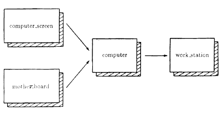

Из урока 26 вы узнали, что можно построить один класс из другого, наследуя его характеристики. Оказывается, C++ позволяет порождать класс из нескольких базовых классов. Когда ваш класс наследует характеристики нескольких классов, вы используете множественное наследование. Как вы узнаете из данного урока, C++ полностью поддерживает множественное наследование. К концу этого урока вы изучите следующие основные концепции:
Множественное наследование является мощным инструментом объектно-ориентированного программирования. Экспериментируйте с программами, представленными в этом уроке, и вы обнаружите, что построение класса из уже существующего значительно экономит усилия на программирование.
Предположим, к примеру, у вас есть класс computer_screen:
class computer_screen
{
public:
computer_screen(char *, long, int, int);
void show_screen(void);
private:
char type[32] ;
long colors;
int x_resolution;
int y_resolution;
};
Предположим, что у вас есть также класс mother_board:
class mother_board
{
public:
mother_board(int, int, int);
void show_mother_board(void);
private:
int processor;
int speed;
int RAM;
};
Используя эти два класса, можно породить класс computer, что показано ниже:
class computer : public computer_screen, public mother_board
{
public:
computer(char *, int, float, char *, long, int, int, int, int, int);
void show_computer(void);
private:
char name[64];
int hard_disk;
float floppy;
};
Как видите, этот класс указывает свои базовые классы сразу после двоеточия, следующего за именем класса computer.
class computer : public computer_screen, public mother_board //——————> Базовые классы
Следующая программа COMPUTER. CPP порождает класс computer, используя базовые классы computer_screen и mother_board:
#include <iostream.h>
#include <string.h>
class computer_screen
{
public:
computer_screen(char *, long, int, int);
void show_screen(void);
private:
char type[32];
long colors;
int x_resolution;
int y_resolution;
};computer_screen::computer_screen(char *type, long colors, int x_res, int y_ree)
{
strcpy(computer_screen::type, type);
computer_screen::colors = colors;
computer_screen::x_resolution = x_res;
computer_screen::y_resolution = y_res;
}void computer_screen::show_screen(void)
{
cout << "Тип экрана: " << type << endl;
cout << "Цветов: " << colors << endl;
cout << "Разрешение: " << x_resolution << " на " << y_resolution << endl;
}class mother_board
{
public:
mother_board(int, int, int);
void show_mother_board(void);
private:
int processor;
int speed;
int RAM;
};mother_board::mother_board(int processor, int speed, int RAM)
{
mother_board::processor = processor;
mother_board::speed = speed;
mother_board::RAM = ram;
}void mother_board::show_mother_board(void)
{
cout << "Процессор: " << processor << endl;
cout << "Частота: " << speed << "МГц" << endl;
cout << "ОЗУ: " << RAM << " МВайт" << endl;
}class computer : public computer_screen, public mother_board
{
public:
computer(char *, int, float, char *, long, int, int, int, int, int);
void show_computerf void);
private:
char name [64];
int hard_disk;
float floppy;
};computer::computer(char *name, int hard_disk, float floppy, char *screen, long colors, int x_res, int y_res, int processor, int speed, int RAM) : computer_screen(screen, colors, x_res, y_res), mother_board(processor, speed, ram)
{
strcpy(computer::name, name);
computer::hard_disk = hard_disk;
computer::floppy = floppy;
}void computer::show_computer(void)
{
cout << "Тип: " << name << endl;
cout << "Жесткий диск: " << hard_disk << "МВайт" << endl;
cout << "Гибкий диск: " << floppy << "МВайт" << endl;
show_mother_board();
show_screen();
}void main(void)
{
computer my_pc("Compaq", 212, 1.44, "SVGA", 16000000, 640, 480, 486, 66, 8);
my_pc.show_computer();
}
Если вы проанализируете конструктор класса computer, то обнаружите, что он вызывает конструкторы классов mother_board и computer_screen, как показано ниже:
computer::computer(char *name, int hard_disk, float floppy, char *screen, long colors, int x_res, int y_res, int processor, int speed, int RAM) : computer_screen(screen, colors, x_res, y_res), mother_board(processor, speed, RAM)
При использовании наследования в C++ для порождения одного класса из другого возможны ситуации, когда вы порождаете свой класс из класса, который уже, в свою очередь, является производным от некоторого базового класса. Например, предположим, вам необходимо использовать класс сотputer базовый для порождения класса workstation, как показано ниже:
class work_station : public computer
{
public:
work_station (char *operating_system, char *name, int hard_disk, float floppy, char *screen, long colors, int x_res, int y_res,int processor, int speed, int RAM);
void show_work_station(void);
private:
char operating_system[64];
};
Конструктор класса workstation просто вызывает конструктор класса computer, который в свою очередь вызывает конструкторы классов сотрuter_screen и mother_board:
work_station::work_station( char *operating_system, char *name, int hard_disk, float floppy, char *screen, long colors, int x_res, int y_res, int processor, int speed, int RAM) : computer (name, hard_disk, floppy, screen, colors, x_res, y_res, processor, speed, RAM)
{
strcpy(work_station::operating_system, operating_system);
}
В данном случае класс computer выступает в роли базового класса. Однако вы знаете, что класс computer был порожден из классов computer_screen и mother_board. В результате класс work_station наследует характеристики всех трех классов. На рис. 27 показано, что порождение классов приводит к иерархии классов.

Рис. 27. Построение иерархии классов.
Когда ваши программы будут интенсивно использовать наследование, ваша иерархия классов, а следовательно, и количество наследуемых элементов может стать довольно длинной.
Множественное наследование представляет собой возможность порождать класс из нескольких базовых классов. При использовании множественного наследования производный класс получает характеристики (элементы) существующих базовых классов. Поддержка множественного наследования в C++ предоставляет вашим программам огромные возможности объектно-ориентированного программирования. Из урока 28 вы узнаете, как обеспечить доступ к частным элементам класса со стороны других классов или функций других классов, которые вы указываете как друзей. Используя таких друзей, вы можете предоставить определенным функциям прямой доступ к элементам класса, одновременно обеспечивая их защиту от остальной части программы. Прежде чем перейти к уроку 28, убедитесь, что вы изучили следующее: